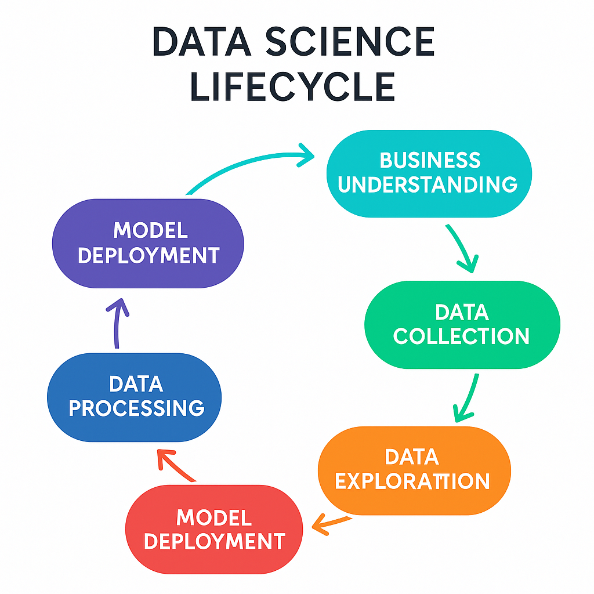
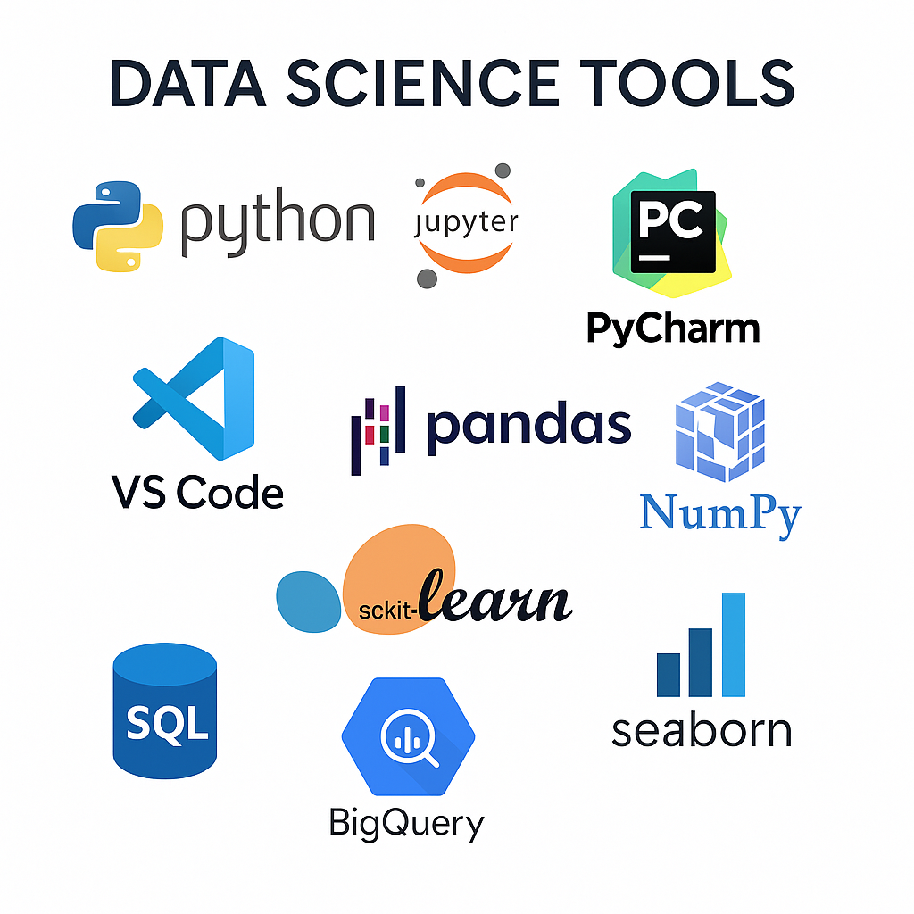

Bem-vindo ao meu portfólio de Data Science
Explore meus projetos em ciência de dados, aprendizado de máquina, visualização de dados e automações em Python.
Este portfólio é uma vitrine dos meus conhecimentos e habilidades em Data Science, incluindo projetos de machine learning, análise de dados e automação de processos.
Você pode navegar pelos projetos clicando no menu acima.
O que é Data Science?
Data Science é a disciplina que combina estatística, ciência da computação e conhecimento de dados para extrair insights e valor dos dados. Envolve a coleta, limpeza, análise e visualização de dados, além da construção de modelos preditivos e de machine learning.
O ciclo de vida de Data Science inclui etapas como definição do problema, coleta de dados, exploração, modelagem, validação e implementação.
Notícias Recentes em Data Science
-
Startups nativas de IA operam com menos pessoas e crescem mais rápido, mostra estudo
Estudo revela que startups de IA operam com até 60% menos funcionários e crescem mais rápido, com maior foco em desenvolvedores. -
IA do Google para gerar vídeos realistas é lançada em 159 países
O modelo Veo 3 gera até três vídeos por dia com texto descritivo no app Gemini. Está disponível globalmente no plano AI Pro. -
IA soluciona em dois dias questão-chave sobre superbactérias que cientistas levaram anos para desvendar
Um problema complexo que levou uma década para ser resolvido pelos microbiologistas foi resolvido em apenas dois dias por uma nova ferramenta de inteligência artificial (IA) -
LEO (LLM Engine Optimization) – O Novo Paradigma de Otimização de Conteúdo
Ferramenta de IA foca em criação ética de dados sintéticos, com maior controle e privacidade em amostras para machine learning.